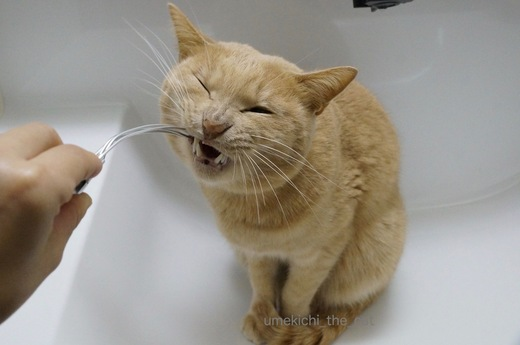
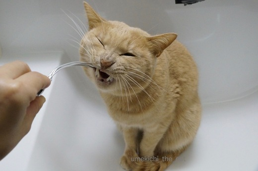

おかーさんの日課 [梅吉]
梅吉さんの日課があるならおかーさんの日課もあるわけで・・・

そんなところに居座っていると

こんなことがしたくなるんですよ。うりうり〜

![[猫]](https://blog.ss-blog.jp/_images_e/101.gif) まいあさおなじことやめてんか。
まいあさおなじことやめてんか。

ひつっこいわ〜ほんまに・・・・

ぎーーーーーっ
ああ、良いお顔ですよ(≧▽≦)
この顔を見ないと１日が始まらないかも。
このほか薬用リップクリームのニオイを嗅いで嫌な顔をするのもルーチンです。笑
今朝はその表情を撮る気満々だったのにしてくれませんでした・・・・
思い通りには行かない猫様。

こちらは期待通りに順調です。大きなリバウンドもなくただいま4550ｇ。
あと50〜100ｇは許容範囲かな。このままキープしたいです。
 ↑ガブッと一押し↑
↑ガブッと一押し↑
中学のときによく読んだ遠藤周作。
面白エッセイ「狐狸庵先生」シリーズから入ったので
「沈黙」を読んだときは衝撃でした。
重い、重い映画です。
宣教師、キリシタンそれぞれの信仰心のお話。
162分と長尺な映画ですが息を詰めるようにしてスクリーンをみつめていました。
映画の内容についての感想はあまりに長くなりそうなので割愛。
猫ブログなのでね〜。梅吉に怒られる。
で、別角度からの感想は、日本人俳優の方々の演技が素晴らしかったことです。
キチジローのズルくて卑しいのだけれど純粋な信仰が宿る表情、
神父から渡されたクルスを啓示を受けたように押し頂くモキチの目と手。
「告解」で不満をまくし立てるおばちゃんの勢い。老獪で見識深い長崎奉行の語り口。
一癖も二癖もある日本の役者さんたちは
完全に主役のスパイダーマンお兄ちゃんを食っていましたよ。
その他日本映画だったらもっと大きく名前がクレジットされるような方々がたくさん出演。
スコセッシ監督の映画だったら現場に居られるだけでもすごい体験ですものね。
その方々の一人、神父ロドリゴが棄教してキリスト像に足を乗せる場面で
牢番としてすっくと立っていたのがおっとの大学時代からの友人斎藤歩さん。
残念なことにセリフはなかったけれど重要な場面、画面を〆ていたのでした。
おっとの友人ハリウッド俳優。ふふ。
最後、とんだ自慢になっちゃいましたが良い映画です。
ご覧になる際には牢番にも注目ですよー。

そんなところに居座っていると

こんなことがしたくなるんですよ。うりうり〜



ああ、良いお顔ですよ(≧▽≦)
この顔を見ないと１日が始まらないかも。
このほか薬用リップクリームのニオイを嗅いで嫌な顔をするのもルーチンです。笑
今朝はその表情を撮る気満々だったのにしてくれませんでした・・・・
思い通りには行かない猫様。

こちらは期待通りに順調です。大きなリバウンドもなくただいま4550ｇ。
あと50〜100ｇは許容範囲かな。このままキープしたいです。
中学のときによく読んだ遠藤周作。
面白エッセイ「狐狸庵先生」シリーズから入ったので
「沈黙」を読んだときは衝撃でした。
重い、重い映画です。
宣教師、キリシタンそれぞれの信仰心のお話。
162分と長尺な映画ですが息を詰めるようにしてスクリーンをみつめていました。
映画の内容についての感想はあまりに長くなりそうなので割愛。
猫ブログなのでね〜。梅吉に怒られる。
で、別角度からの感想は、日本人俳優の方々の演技が素晴らしかったことです。
キチジローのズルくて卑しいのだけれど純粋な信仰が宿る表情、
神父から渡されたクルスを啓示を受けたように押し頂くモキチの目と手。
「告解」で不満をまくし立てるおばちゃんの勢い。老獪で見識深い長崎奉行の語り口。
一癖も二癖もある日本の役者さんたちは
完全に主役のスパイダーマンお兄ちゃんを食っていましたよ。
その他日本映画だったらもっと大きく名前がクレジットされるような方々がたくさん出演。
スコセッシ監督の映画だったら現場に居られるだけでもすごい体験ですものね。
その方々の一人、神父ロドリゴが棄教してキリスト像に足を乗せる場面で
牢番としてすっくと立っていたのがおっとの大学時代からの友人斎藤歩さん。
残念なことにセリフはなかったけれど重要な場面、画面を〆ていたのでした。
おっとの友人ハリウッド俳優。ふふ。
最後、とんだ自慢になっちゃいましたが良い映画です。
ご覧になる際には牢番にも注目ですよー。

カフェオレ色の梅吉

梅吉 2023年8月10日 永眠


梅吉と出会った譲渡会

犬猫の理由なき殺処分ゼロ
妄想広告
UMEKICHI 光

爆発的に早い！
時々攻撃的！
Thanks to Mr.Boss365
爆発的に早い！
時々攻撃的！
Thanks to Mr.Boss365

目の前に出されたらぎーっするのが猫の務めですよね！
ウチのも薬用リップは嫌い。
なので家の中ではつけず、手を舐めに来るのでハンドクリームもつけず。
私、カサカサにひび割れてます^^;
ハリウッド俳優がお友達って憧れです～♪
きっとおっとさんも格好いいんだろうな～よいな～よいな～(*^▽^*)
by ゆきち (2017-02-07 18:46)
こちらの日課も楽しそうでいいですねぇ～♪
by きぃ (2017-02-07 19:03)
朝から元気いっぱいの梅吉くん。
体重計は神妙な顔に見えますが、苦手かな（笑）
ハリウッド俳優さんがお友達とは自慢しても良いですよ〜スゴイね。
by kiki (2017-02-07 20:32)
6枚目の写真は、叱られた後のいたずらっ子のように見えます。
by 粋田化石 (2017-02-07 20:48)
ハリウッド俳優がご友人とはすごいですね！！
梅吉さんもハリウッド俳優になれるかも。^^)
by yes_hama (2017-02-07 21:18)
こんな日課なら、毎日毎日やりたいです＞＜///
by sumi-cyan (2017-02-07 22:07)
この映画を見た友人の感想は
「えらいもん、見てしもたー」でした(^_^;)
by よーちゃん (2017-02-08 06:55)
目の前に出されるとつい反応しちゃいますよねぇ(⌒-⌒; )
うちの大御所はかみさんのリップクリームを舐めようとするらしいです（メンソレータムじゃないからか）w
by ニッキー (2017-02-08 09:10)
体重計の上の梅吉さん、なんだか心配そう(^^;
｢どうやろ？｣って思ってるかな？
ゆづは歯磨き粉の匂いをしきりに気にします。
ネコ様は鼻が敏感でしょうから、気持ち悪くないのかなぁ？？
by も〜 (2017-02-08 09:25)
わかるーーー！
わたしも猫たちのその顔大好き！！
もうにへにへしちゃいますよ(笑)
沈黙、原作を読もうって思ってます^^
by リュカ (2017-02-08 09:48)
梅吉さんがお利口さんしているので、
ガブッといっときました！(^ ^)
by KENT0mg (2017-02-08 13:05)
ゆきちさん＞こてつくんのためにガマンを・・・涙
手荒れ終了の季節までがんばれ〜。
うちのおっとは・・・うふふ。
梅吉の次にええ男ですのよん。（注：家庭内比）
きぃさん＞毎朝毎朝梅吉と二人して飽きもせず・・・です(≧▽≦)
kikiさん＞本当に朝から元気すぎて・・・・
あさや！あさやでー！！と家の中をわけもなく走り回るのも日課なんですよ。
体重計の上の神妙顔は「もういってもええやろか・・・・」と
思っている顔です^^
粋田化石さん＞するどいですねー。
おかーさんに「ちゃんと乗っていなさい！」と言われた直後。
そして早く降りて遊びたい顔なのです！
yes_hamaさん＞梅吉、コメディ映画ならいけるかも！
でも、いうこと聞かなすぎで映画完成まで何年かかることやら・・・^^;
よーちゃん＞そう、えらいもんでした。
エンドロールが流れ始めても席から立ち上がる人がすごく少なくて・・・
映画の重さにたちあがれない、そんな雰囲気でした。
ニッキーさん＞ゴッドマサー様は美味しそうな香りのリップクリームを
使ってらっしゃるのかなー。
ニャンズさん「ママの香りだー」と思っているのかも。
ニッキーさんもつけてみるとか・・・^^
も〜さん＞も〜さんも体重計上の梅吉の表情が気になりましたか。
２〜３回乗せても降りてきちゃうから「ちゃんと乗ってなさい！」と
おかーさんに怒られた直後の顔なのです・・・^^;
そして、わしもういってもええかな・・・と様子を伺っているの。
このあとちゃんと遊んであげましたよー。
リュカさん＞歯、むき出している顔って可愛いよね♪
出来そうな時はスキを見て綿棒で歯をシュシュっと磨いてます。
沈黙、原作は更に深いですよ。
精神状態の良い時にどぞ^^
KNET0mgさん＞おかーさんに「うごいちゃダメ！」と言われて
良い子にしていました（一瞬ね。）
良い子にできることもある^^;
by ちぃ (2017-02-08 16:12)
ぎいーって顔、最高！
まろんはみかんの皮の匂いをかがされて「うへっ！信じられん」て顔してました。お試しを。
by じゅらまろ (2017-02-08 16:35)
変な物におがすの楽しいですね。ふふ(^.^)
by palpal (2017-02-08 17:35)
じゅらまろさん＞みかん・・・φ(.. )と。やってみるー！
palpalさん＞そうそう、あのいっしゅんの「うわっ！なんやこれ・・・・」
って顔がたまらない・・・(ΦωΦ)
by ちぃ (2017-02-08 17:48)